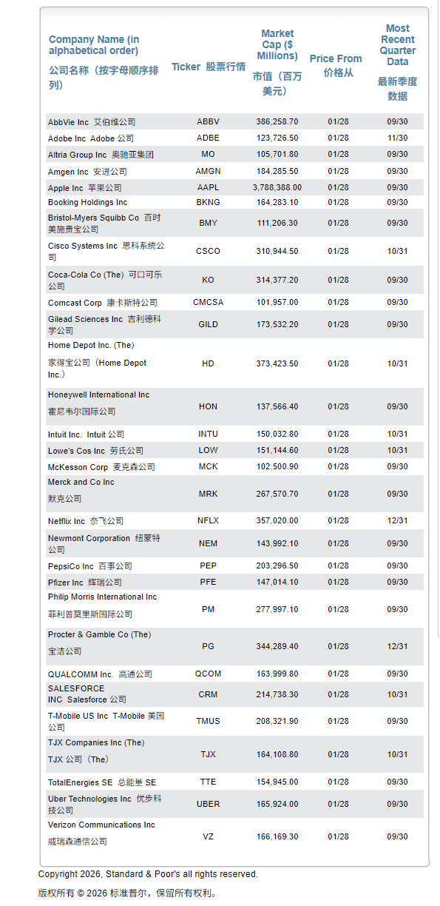

2010年，乔尔·格林布拉特出版了《股市稳赚》一书，公开了他实现年化收益率近40%的策略——“神奇公式”。
“神奇公式”策略公布至今，依旧很少有人相信它的有效性；别说个人投资者，就连那些顶级的投资者也并不相信；毕竟，它真的太简单了，简单到你只需要在网站上输入一串数字就能得到选好的股票组合。（注：目前该网站的实时数据仅适用美股）
除此之外，还有一个原因是，“神奇公式”并不是任何时候都奏效，有时候会出现一段时间内回报率低于市场平均水平。
我们都清楚，如果一个投资策略要长时间（有时要等3年、4年甚至5年）才能见效，那大多数人都会放弃。
同样，如果某种投资策略在一两年内低于市场平均水平（或收益低于朋友），大多数人都会去找另外一种新的投资策略，进而舍弃那些过去几年中成绩突出的方法。
正因为“过于简单+长期”，“神奇公式”公布至今，十几年过去了，使用它的人依旧不多。当然，如果每个人都用，那么它也就有可能失去效用（回报低于市场平均水平），让人难以继续。
什么是“神奇公式”？
那究竟什么是“神奇公式”？它又是如何运作的呢？
“神奇公式”策略的核心逻辑是，用便宜的价格买入优秀的企业；它背后的投资理念来自本杰明·格雷厄姆的“市场先生”和“安全边际”——即，用相对低的价格买入“好公司”，当这些公司不断将利润投入到高回报的业务，意味着真实的安全边际会随时间推移而扩大。
那什么是好公司？又该如何确定该公司的价格相对低呢？
格林布拉特将该原理，量化成了“神奇公式”，即通过两个核心指标：
衡量“业务好坏”： 资本回报率（Return on Capital）
衡量“价格水平”：盈余收益率（Earnings Yield）
资本回报率，就是公司利用资产开展业务，所产生的利润效率；通常可用“息税前利润 (EBIT) / (净营运资本 + 净固定资产)”来计算。而，一家高资本回报率的公司，时常意味着具有某种竞争优势，能够阻挡竞争对手侵蚀利润。
盈余收益率，表示相当于股价的盈利能力，代表企业每投资一美元能获得多少利润；通常用“ 1 ➗ P/E ”来计算。更高的盈利收益率意味着投资回报率较高，而收益率较低意味着价格高，且有可能被高估。
“神奇公式”的核心并不是把这两个指标拆分，而是选择这两者组合相加后的最佳效果。比如，整个股市市值100亿元的企业有3500家，而某家公司的资本回报率排在第232位，盈余收益率排在153位，那么其综合排名是385（232+153）。
当计算出所选股票池的综合排名后，就需要从高到低进行排列，然后，从中筛选出前20-30只股票进行投资。
每一年用“神奇公式”筛选一次，卖出那些排名靠后的股票，补入那些新进的股票；而整个投资组合最好持有4年以上，时间越长越有利于该策略发挥效应。
整体来说，该策略简化了选股的难题，并进行分散化投资。而，这个策略之所以值得坚持，原因是格林布拉认为投资结果能够高于市场平均水平，而他本人过往的回报确实是相当不错。
如何分步实施这套投资策略？
那对于个人投资者来说，若对该策略感兴趣，该如何分步实施这套投资策略？
大致有3个步骤：
1）筛选排名靠前的公司
2）分步建立投资组合
3）持有与卖出
首先，如何按照“资本回报率”与“盈利收益率”指标筛选出公司清单，对于投资美股的投资者来说，很便捷，直接登录：magicformulainvesting.com ；并在网站中输入所筛选企业的市值及需要的股票数量：
于是，很快网站会根据你的筛选标准按综合排名，从高到低的给出一个清单：

其次，就是分步建仓。对于一个20-30只的股票组合，第一步先购买 5到7只 排名靠前的公司股票；且初期投入的资金应仅占你第一年计划投资总额的 20%到33%。
然后，每隔2到3个月，再次筛选并买入5到7只新股票，直到你在9到10个月后建立起一个拥有20到30只股票的投资组合。
再次，就是持有与卖出。按照乔尔·格林布拉特的原则，每只股票应持有整整一年；然后按照“神奇公式”筛选，卖出持满一年且不在综合排名的股票，并用所得资金买入等量的新筛选出的“神奇公式”股票。
由于该网站主要接入的是美股的数据，想要在国内运用，以前可能个人在处理数据上有难度，不过现在有AI，AI最擅长的是处理大量数据，让AI来写个简易的程序来处理这些，能降低前期实践的门槛。
另外，对个人而言，使用该方法的难处在于要持有20-30只股票，精力耗损很大。反而，可能是持有一个标普500指数，然后用神奇公式筛选出5-8只股票作为补充可能更适合。
不过，作为投资者，无论是选择哪种策略，产生差异的还是“长期”。在正确的方向上，长期坚持才会有惊喜收获；而，大部分实操的策略和方法，是为了筛选出正确的方向。
这是希芙的第310 期分享
2026年希芙200篇原创计划 第 18 篇
如何系统性构建个人的投资体系？（附实用指南）